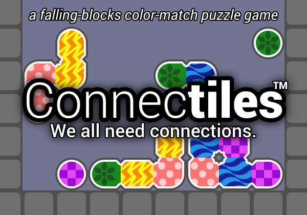
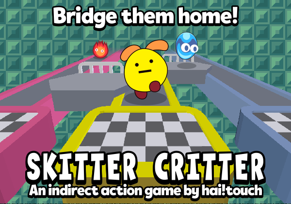
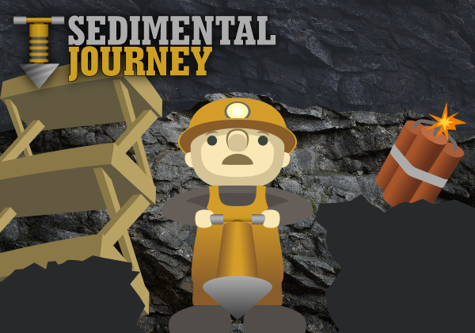
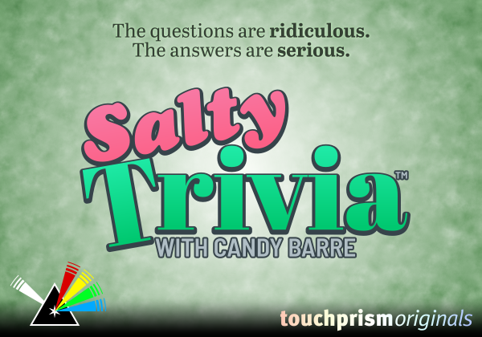

ゲーム一覧
-

マルボッツを退治せよ！
キーボード コントローラー タッチスクリーン同じ色のブロックを4つ繋げて、いたずら者のマルボッツを退治しよう！
日本語 / English / español / русский
-

Multistak「マルチスタック」
キーボード コントローラー時間の流れの速さを操作できるようになったあなたは、落ちものパズルゲームを3つ同時に遊ぶことに強大な力を浪費することにしました。
Gotm.io Jam 第2回: Speed への投稿。19件中8位。
-

CROSSNIQ「クロスニーク」ファミコン風ディメイク
キーボード コントローラー マウス タッチスクリーン注: お使いの端末の言語を日本語にしないと、日本語になりません。
Y2Kがピコピコに。どれだけ速くタイルを十字に並べ替えられるかな？
Max Krieger 作ゲーム『CROSSNIQ』（クロスニーク）のリメイク。
Retro Jam 2021: Side Effects への投稿。141件中33位。
-

Connectiles（コネクタイルズ）
キーボード コントローラー歪な形に繋がったカラフルなピースを、同じ色のグループを繋げて消しましょう。連鎖を起こしたらボーナスが入ります。
Gotm.io Jam 第5回: Make It Random への投稿。11件中5位。
-

Skitter Critter
マウス タッチスクリーン3つの廊下をひょこひょこ歩くいきものを、橋をかけたり壊したりして、同じ色の出口に案内しましょう。
Gotm.io Jam 第6回: Leading a Group への投稿。5件中2位。
-

Sedimental Journey
キーボード コントローラー マウス タッチスクリーントンネルをどんどん掘り進みましょう。同じ種類の岩は一緒に落ちます。
Gotm.io Jam 第7回: Exploration への投稿。12件中4位。
-

乱雑学 (Salty Trivia with Candy Barre)
キーボード コントローラー マウス タッチスクリーン リモートひねりが効いたクイズパーティー！ インターネット経由で遠くの友達と同時に対戦できる。
注： 日本語版はまだありませんが、テキストベースのミニゲーム乱雑学 Presents ハンハンターはいかがですか？
-
2048 ボール融合
マウス タッチスクリーン同じ数字のぷよぷよボールを融合して、2048を作ろう！
日本語 / español / Deutsch / français / русский